Modlitebná aplikácia
Svätý ruženec vždy po ruke
Rosario vás pokojne prevedie modlitbou ruženca, desiatok po desiatku, s obrazom, zamyslením a evanjeliom ku každému tajomstvu. K tomu novény, litánie a ďalšie modlitby.
- Zadarmo
- Bez reklám
- Bez účtu
- Funguje aj bez internetu
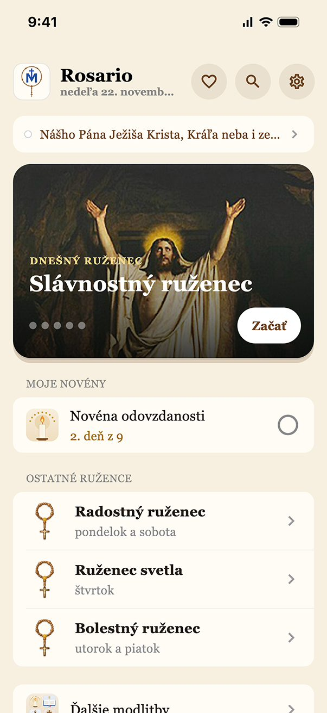
Štyri ružence
Na úvodnej obrazovke vždy čaká ruženec na dnešný deň. Ku každému tajomstvu je obraz od starých majstrov, krátke zamyslenie a úryvok z evanjelia. Modliť sa dá v rímskokatolíckom aj gréckokatolíckom obrade.
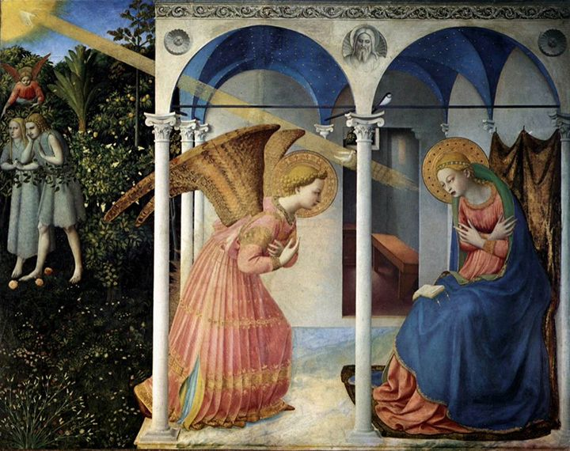
Dnes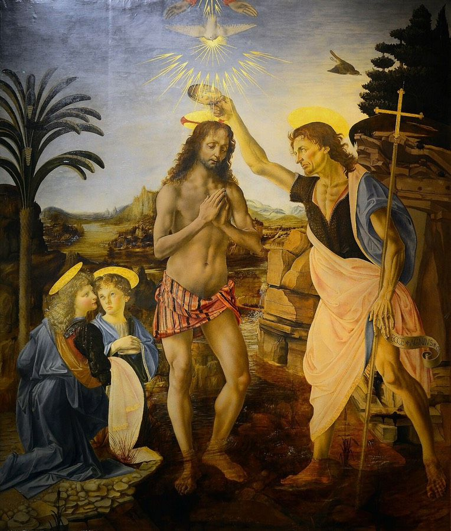
Dnes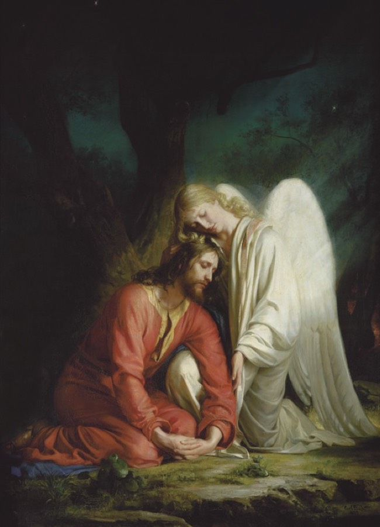
Dnes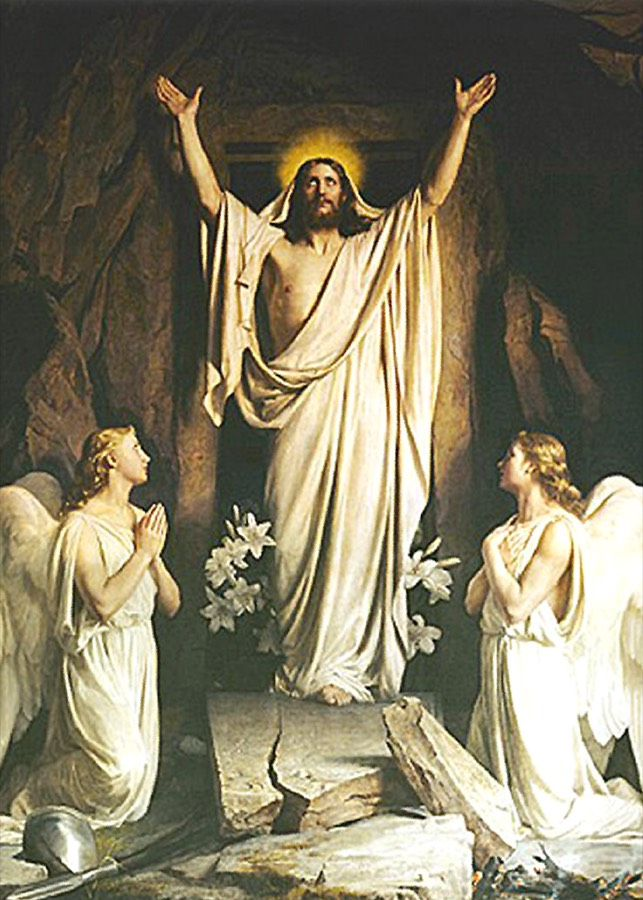
DnesA mnoho ďalších modlitieb
Všetko je prehľadne v zložkách a dá sa rýchlo nájsť podľa názvu aj podľa slov z textu.
Novény
Pompejská novéna na 54 dní s počítaním dní a pripomienkami, novéna odovzdanosti, k sv. Júdovi Tadeášovi, k Panne Márii Rozväzovačke uzlov a pobožnosti sv. Brigity.
Božie milosrdenstvo
Korunka Božieho milosrdenstva a krátke články o posolstve svätej sestry Faustíny.
Litánie a modlitby
Loretánske litánie, litánie k Božskému Srdcu, k sv. Jozefovi a ďalším svätým, Anjel Pána, Duša Kristova, Te Deum a mnohé iné.
Gréckokatolícky obrad
Ruženec podľa východného obradu, akatisty a molebeny. Modlitby ruženca aj v cirkevnej slovančine.
Krížové cesty
Krátka krížová cesta, s Bolestnou Matkou, so sv. Faustínou a so sv. Pátrom Piom.
Spytovanie svedomia
Ako sa vyspovedať, spytovanie pre dospelých aj pre deti. Poznámky na spoveď ostávajú len v telefóne a dajú sa natrvalo vymazať.
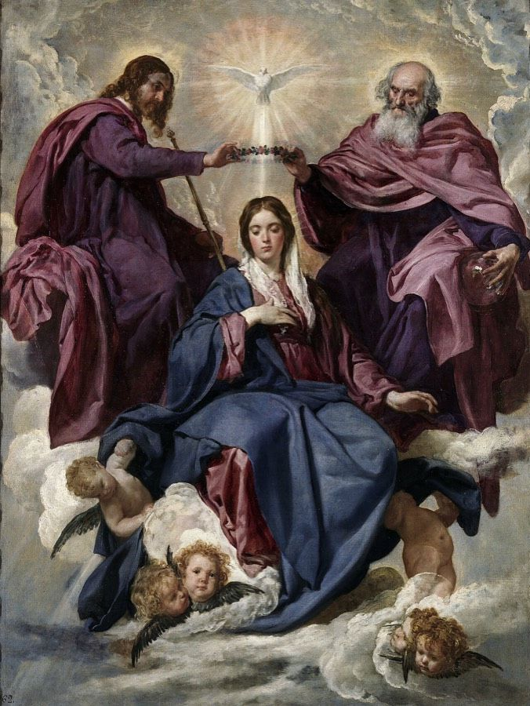
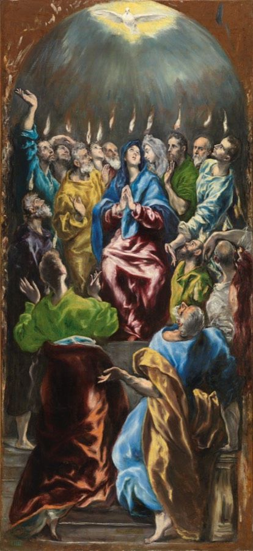
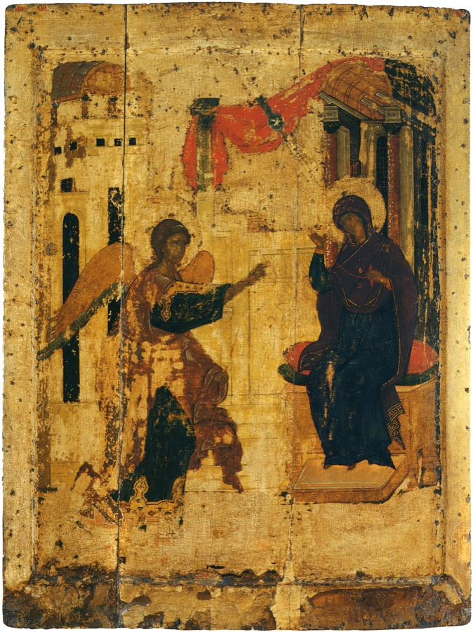
S Pannou Máriou a svätými
Okrem štyroch ružencov aj ruženec oslobodenia, k Sedembolestnej Panne Márii, k slzám Panny Márie a modlitby k svätým, ktorých ľudia prosia o pomoc. Každý deň appka pripomenie sviatok alebo svätého dňa podľa vášho obradu.
- sv. Jozef
- sv. Michal archanjel
- sv. Júda Tadeáš
- sv. Rita
- sv. Anton
- sv. Šarbel
- sv. Páter Pio
- sv. Faustína
- sv. Cyril a Metod
- sv. Ján Pavol II.
- sv. Katarína Labouré
- anjel strážca
Jednoduchá a pokojná
Písmo si zväčšíte podľa seba, večer sa môžete modliť v tmavom režime a appka nevydáva žiadne zvuky, takže ju pokojne použijete aj v kostole.
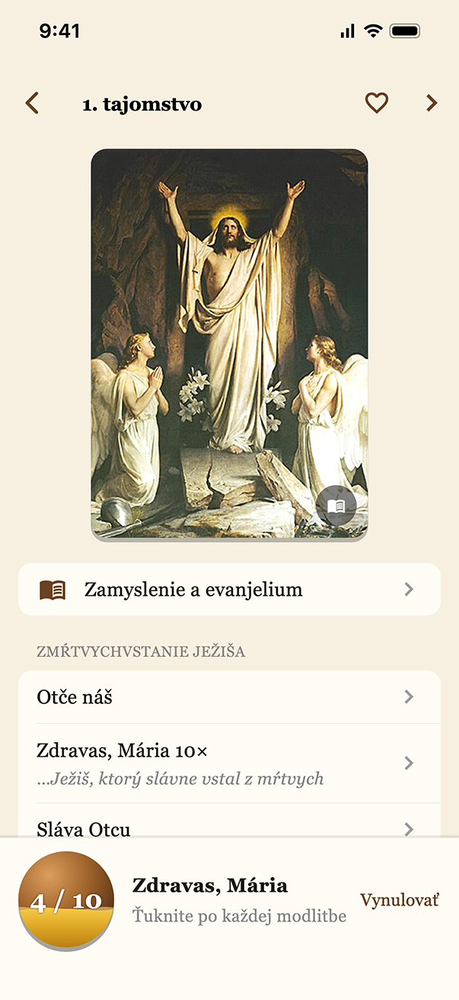
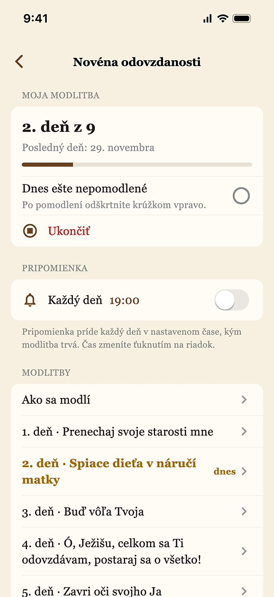
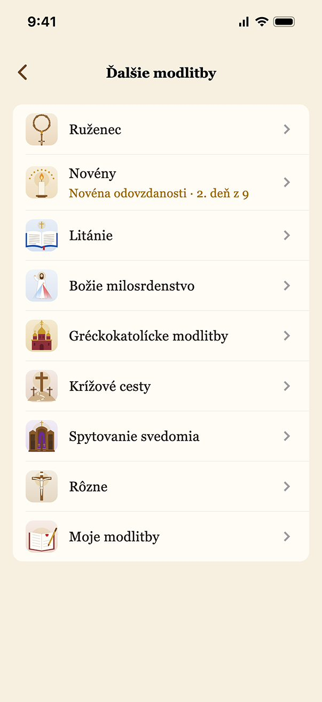
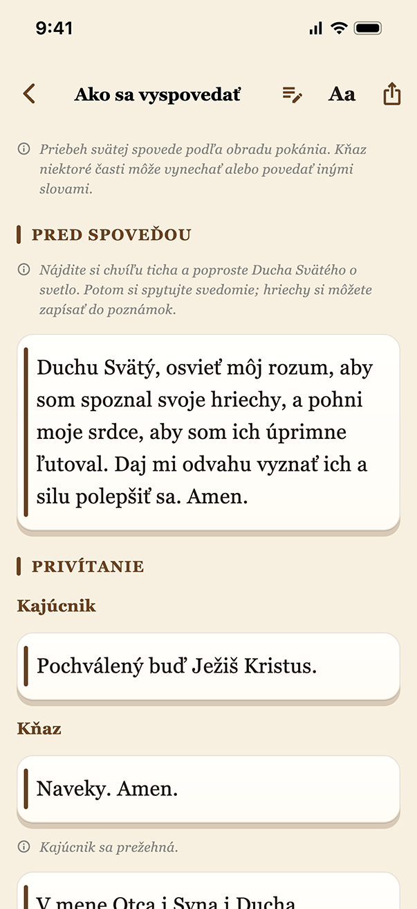
Vaša modlitba patrí len vám
Rosario je úplne zadarmo, bez reklám, bez účtu a bez sledovania. Nič neposiela z vášho telefónu a funguje aj bez internetu, napríklad v kostole bez signálu.
V troch jazykoch
Jazyk aj obrad si vyberiete pri prvom otvorení a kedykoľvek ich zmeníte v Nastaveniach.
Slovensky
Všetky ružence a modlitby, rímskokatolícky aj gréckokatolícky obrad. Modlitby ruženca aj po latinsky alebo v cirkevnej slovančine.
English
The Holy Rosary for Roman and Byzantine Catholics, with the prayers also in Latin or Church Slavonic.
Magyarul
A szent rózsafüzér, az Isteni Irgalmasság rózsafüzére és a pompeji novéna.
Stiahnite si Rosario
Pre iPhone, iPad a telefóny s Androidom. Zadarmo.
Sledujte nás aj na Instagrame: @rosarioappka